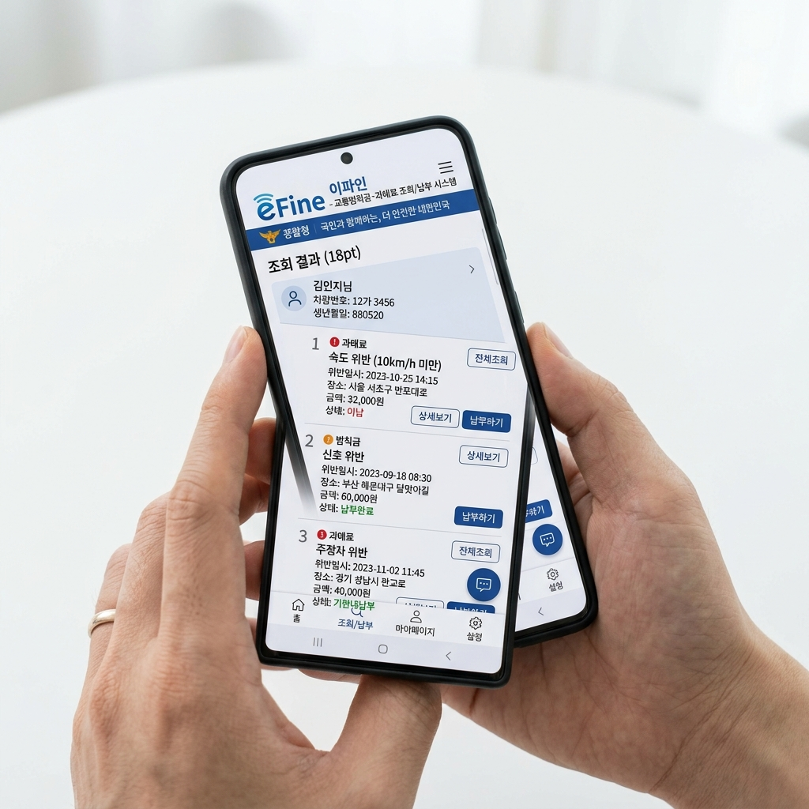
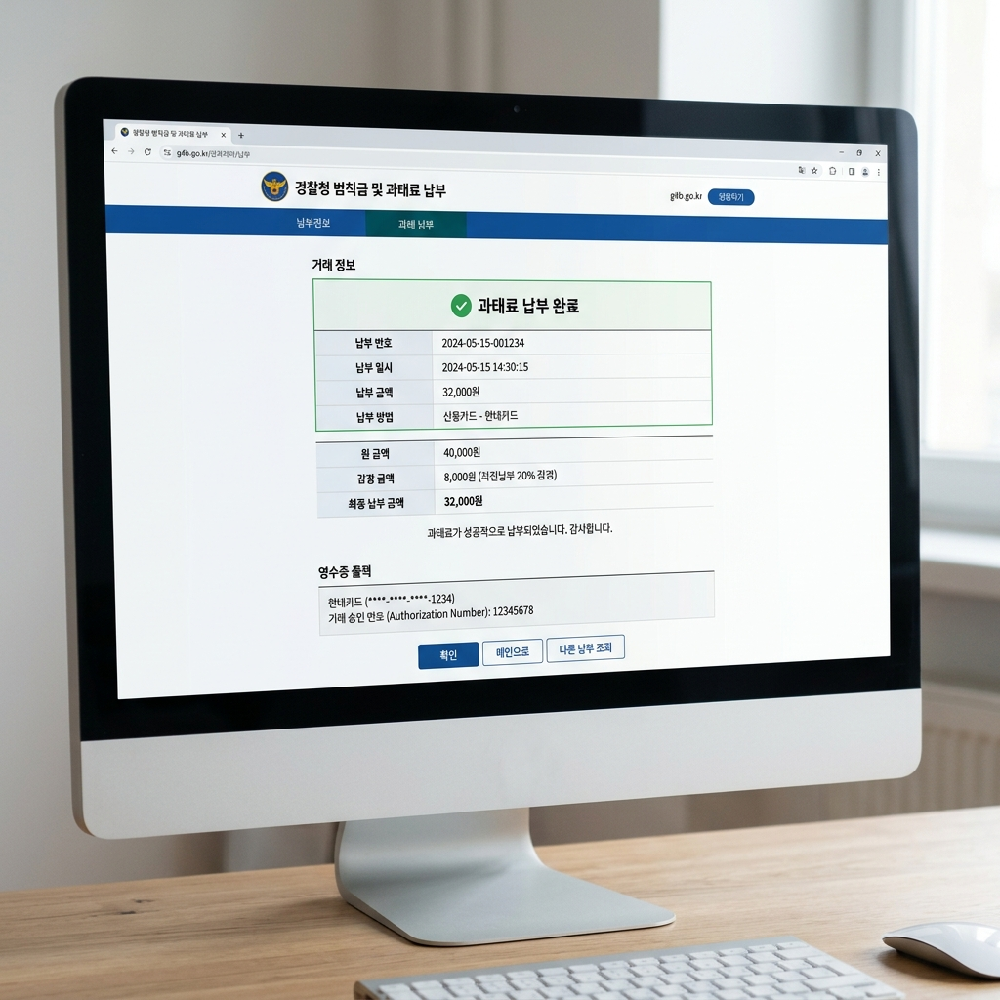

자동차 범칙금·과태료 이파인 5분 조회법, 사전납부로 20% 아끼는 방법
✍️ 경험박스
저도 어느 날 우편함에서 노란 봉투를 꺼내 든 적이 있습니다. 버스전용차로 위반 과태료 고지서였는데, 고지서가 온 줄도 모르고 2주를 그냥 보내버렸습니다. 다행히 납부 기간이 남아 있어서 이파인에서 바로 납부했는데, 그때 20% 사전납부 감경을 받은 금액이 꽤 쏠쏠했습니다. 그 이후로는 이파인 앱 알림을 켜두고 있습니다.
01. 이파인(교통민원24)이란
이파인(eFine)은
경찰청이 운영하는 교통 범칙금·과태료 통합 온라인 서비스입니다. 공식 명칭은 '교통민원24'이며, 웹사이트(www.efine.go.kr) 또는 스마트폰 앱에서 이용할 수 있습니다.
과거에는 고지서를 받아서 은행이나 경찰서에서 처리해야 했지만, 지금은 스마트폰 하나로 모든 것이 해결됩니다. 이파인에서 할 수 있는 일은 ① 미납 과태료·범칙금 조회 ② 카드·계좌이체 납부 ③ 이의신청 세 가지입니다.

이파인 앱 미납 내역 조회 화면 / AI 제작 이미지
02. 과태료와 범칙금의 차이
이파인을 쓰기 전에 두 용어를 이해해야 합니다.
범칙금: 경찰관이 현장에서 직접 운전자를 적발하면 부과됩니다. 운전자 본인에게 부과되며, 미납 시 즉결심판을 거쳐 벌금으로 전환됩니다.
과태료: 무인카메라 단속이나 주차 위반처럼 운전자를 특정하기 어려운 경우 차량 소유자에게 부과됩니다. 일반적으로 범칙금보다 금액이 높습니다. 이의신청 제도가 있습니다.
이파인에서는 두 종류 모두 조회·납부 가능합니다.
03. 이파인 5분 조회 방법
PC 이용 시: www.efine.go.kr 접속 → '범칙금·과태료 조회/납부' 클릭 → 차량번호 또는 면허번호 입력 → 주민번호 앞자리 입력 → 조회. 비회원 조회 가능합니다.
스마트폰 앱 이용 시: 앱스토어·구글플레이에서 '이파인' 검색 후 경찰청 공식 앱 설치 → 비회원 조회 선택 → 차량번호 입력 → 생년월일 입력 → 조회.
조회 결과에서 위반 일시·장소·금액·납부 기한이 표시됩니다. 납부 기한 내라면 20% 감경 금액도 함께 표시됩니다.
이파인 PC 화면 과태료 내역 조회 결과 / AI 제작 이미지
04. 20% 감경 받는 법 — 납부 기한이 핵심
과태료 고지서를 받은 날로부터 60일 이내 납부하면 20% 감경을 받습니다. 5만 원 과태료라면 4만 원만 내면 됩니다.
이파인에서 조회하면 감경 적용 금액이 자동으로 표시되므로 계산할 필요 없습니다. 납부 기한을 넘기면 감경 혜택이 사라지고, 이후 가산금이 붙기 시작합니다.
범칙금은 감경 방식이 다릅니다. 납부 기간(10일) 내 납부 시 범칙금으로 처리 완료되고, 미납 시 즉결심판→벌금으로 전환됩니다.
05. 이의신청 — 억울할 때 어떻게 하나
과태료가 부당하다고 판단되면 이의신청이 가능합니다. 이파인에서 해당 항목 선택 → '이의신청' 클릭 → 사유와 증거 제출.
이의신청 주요 사유: 단속 카메라 오류, 긴급 대피·응급상황, 차량 도난 후 발생 위반, 단속 기준 불명확 등입니다.
중요한 점은 이의신청 중에도 납부 기한이 멈추지 않는다는 것입니다. 기각될 경우 기존 기한이 유효하므로, 이의신청을 하더라도 납부 기한을 주시해야 합니다.

이파인 20% 감경 납부 완료 화면 / AI 제작 이미지
06. 미납 시 불이익
과태료·범칙금을 납부하지 않으면 생기는 일을 정리했습니다.
가산금 누적: 납부 기한(60일) 초과 시 즉시 3% 중가산금이 부과되고, 이후 매월 추가 가산금이 붙습니다.
번호판 영치: 미납 과태료가 일정 금액 이상 누적되면 차량 번호판이 영치될 수 있습니다. 번호판 없이는 차량 운행이 불가능합니다.
재산 압류: 장기 미납 시 예금·급여 압류 등 강제집행이 이루어질 수 있습니다. 소액이라도 방치하지 마세요.
📝 작성자 메모
이파인 앱을 처음 쓸 때 비회원 조회로 충분히 된다는 사실을 몰라서 회원가입을 하려고 공동인증서를 찾다가 포기한 기억이 있습니다. 비회원 조회가 가능하니 그냥 바로 차량번호만 입력하면 됩니다. 앱 푸시 알림을 켜두면 새로운 과태료가 들어왔을 때 바로 알 수 있어서 고지서를 안 받아도 놓치는 일이 없습니다.
#이파인
#교통민원24
#과태료조회
#범칙금납부
#사전납부감경
#과태료20퍼센트
#efine
#교통위반
#이의신청
#자동차과태료